БЛОК ЦИЛИНДРОВ > РАЗБОРКА |
| 1. INSPECT CONNECTING ROD THRUST CLEARANCE |
| 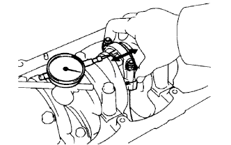 |
Using a dial indicator, measure the thrust clearance while moving the connecting rod back and forth.
| 2. INSPECT CONNECTING ROD OIL CLEARANCE |
| 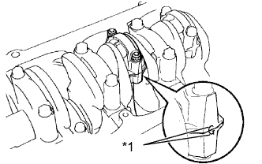 |
Check the matchmarks on the connecting rod and cap to ensure correct reassembly.
| *1 | Matchmark |
Remove the 2 connecting rod cap nuts.
| 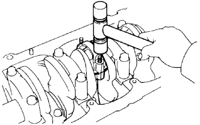 |
Using a plastic-faced hammer, lightly tap the connecting rod bolts and lift off the connecting rod cap.
| 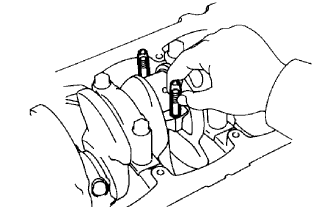 |
Cover the connecting rod bolts with a short piece of hose to protect the crankshaft from damage.
Clean the crank pin and bearing.
Check the crank pin and bearing for pitting and scratches.
If the crank pin or bearing is damaged, replace the bearings. If necessary, grind or replace the crankshaft.
| 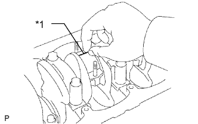 |
Lay a strip of Plastigage across the crank pin.
| *1 | Plastigage |
Place the connecting rod cap on the connecting rod.
Match the numbered connecting rod cap with the connecting rod.
| 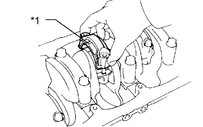 |
Install the connecting rod cap with the front mark facing forward.
| *1 | Front Mark |
Install the connecting rod cap with the 2 nuts.
Apply a light of engine oil to the threads and under the heads of the connecting rod cap nuts.
Step 1:
| 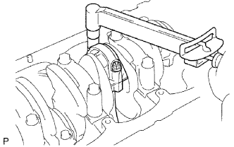 |
Install and alternately tighten the nuts of the connecting rod cap in several passes.
Step 2:
Mark the front of the connecting rod cap nuts with paint.
Retighten the connecting rod cap nuts 90° as shown step 1.
Check that the painted marks are now at a 90° angle to the front.
Remove the 2 nuts, connecting rod cap and lower bearing.
| 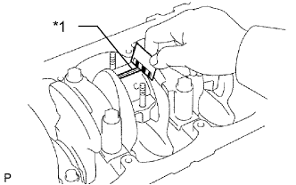 |
Measure the Plastigage at its widest point.
| Item | Specified Condition |
| STD | 0.036 to 0.064 mm (0.00142 to 0.00252 in.) |
| U/S 0.25, U/S 0.50 | 0.033 to 0.079 mm (0.00130 to 0.00311 in.) |
| *1 | Plastigage |
| 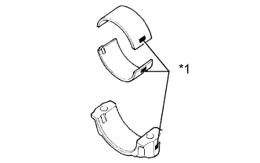 |
If using a standard bearing, replace it with one having the same number marked on the connecting rod cap. There are 3 sizes of standard bearings, marked 1, 2 and 3 accordingly.
| Item | Specified Condition |
| Mark 1 | 1.478 to 1.482 mm (0.0582 to 0.0583 in.) |
| Mark 2 | 1.482 to 1.486 mm (0.0583 to 0.0585 in.) |
| Mark 3 | 1.486 to 1.490 mm (0.0585 to 0.0587 in.) |
| *1 | Mark 1, 2 or 3 |
Completely remove the Plastigage.
Perform the inspection above for each crank pin.
| 3. REMOVE PISTON AND CONNECTING ROD |
| 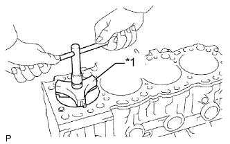 |
Using a ridge reamer, remove all the carbon from the top of the cylinder.
| *1 | Ridge Reamer |
Cover the connecting rod bolts with a short piece of hose to protect the crankshaft from damage.
Push the piston, connecting rod and upper bearing out through the top of the cylinder block.
| 4. REMOVE PISTON SUB-ASSEMBLY |
Check the fitting condition between the piston and piston pin.
Try to move the piston back and forth on the piston pin.
If any movement is felt, replace the piston and pin with a new piston and a set.
| 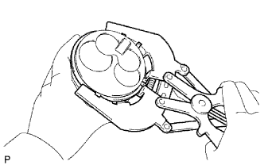 |
Using a piston ring expander, remove the 2 piston rings.
Remove the oil ring and coil by hand.
Disconnect the connecting rod from the piston.
| 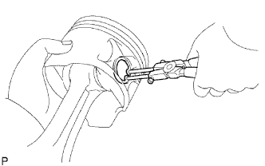 |
Using snap ring pliers, remove the 2 snap rings from the piston.
Gradually heat the piston to approximately 60°C (140°F).
| 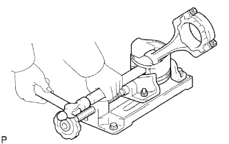 |
Using a plastic-faced hammer and brass bar, lightly tap out the piston pin and remove the connecting rod.
| 5. INSPECT CRANKSHAFT THRUST CLEARANCE |
| 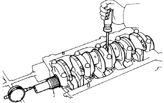 |
Using a dial indicator, measure the thrust clearance while prying the crankshaft back and forth with a screwdriver.
| Item | Specified Condition |
| STD | 2.430 to 2.480 mm (0.0957 to 0.0976 in.) |
| O/S 0.125 | 2.493 to 2.543 mm (0.0981 to 0.100 in.) |
| O/S 0.250 | 2.555 to 2.605 mm (0.101 to 0.103 in.) |
| 6. REMOVE CRANKSHAFT |
| 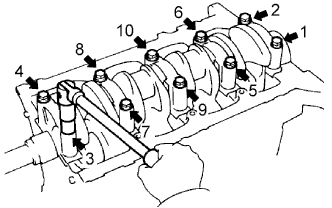 |
Uniformly loosen and remove the 10 crankshaft bearing cap bolts in several passes, in the sequence shown.
| 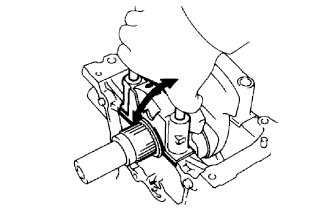 |
Using the removed crankshaft bearing cap bolts, pry the cap back and forth, and remove the crankshaft bearing caps, lower bearings and lower thrust washers (No. 3 crankshaft bearing cap only).
Remove the crankshaft.
| 7. REMOVE NO. 1 OIL NOZZLE SUB-ASSEMBLY |
Remove the 4 check valves and oil nozzles.
| 8. REMOVE CYLINDER BLOCK OIL ORIFICE |
Using a 6 mm hexagon socket wrench, remove the oil orifice.
| 9. REMOVE CYLINDER BLOCK WATER DRAIN COCK SUB-ASSEMBLY |
Remove the water drain cock from the cylinder block.
| 10. REMOVE NO. 1 TAPER SCREW PLUG |
| 11. REMOVE STUD BOLT |